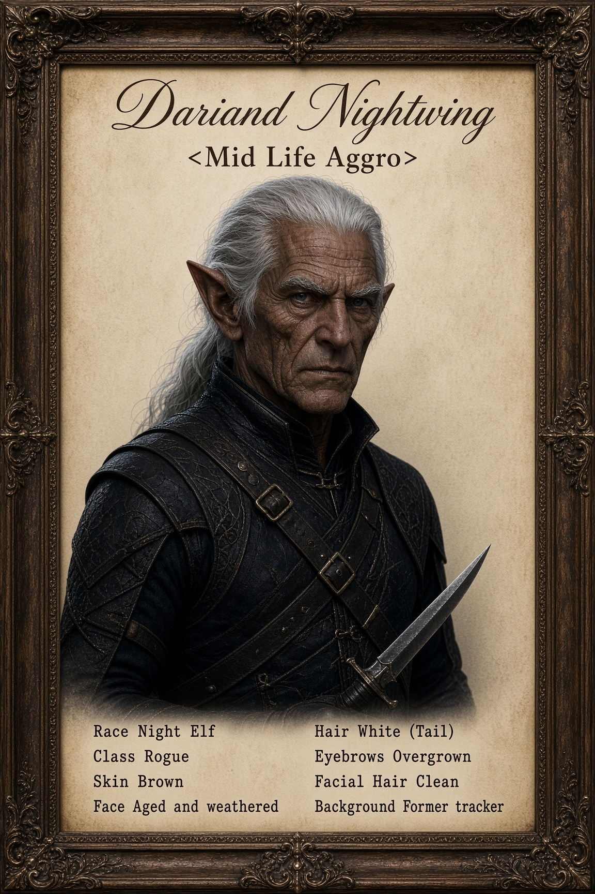

Former tracker and boundary-walker for a settlement that no longer exists. He stabs backs for a living now. He did not always.

Dariand spent the greater part of his long life as a tracker and boundary-walker for a small Night Elf settlement that no longer exists. He read trails, set snares, kept the edges of the wood free of the things that did not belong, and reported what the Sentinels did not have time to see themselves. The work was quiet. It paid in meat, in quiet nights, and in the knowledge that the people behind him were still there when he came back.
The settlement is gone. He does not say how. When asked he says the wood changed and the people did not, and that is the end of the sentence. The tracks he used to follow are older than the trees that grew over them. He kept the skills. He stopped using them for the same reasons.
He is old for an elf who decides, late, that the clean work is finished. Most who take the rogue’s path start younger, when the hands are still quick and the conscience is still flexible. Dariand’s hands are steady enough. The conscience was never the problem. What changed was the understanding that some doors do not open from the front, and some people do not stop because they were asked.
He learned the knife the way he once learned a trail: by walking it until the shape of it lived in the feet. He is not elegant. He is not fast the way the younger ones are fast. He is patient, and he does not miss when the opening is there. The back is simply the side that does not see the strike coming. He has made his peace with that math.
Dariand Nightwing works where the contract is clear and the target is already decided by someone else. He does not choose the names. He does not ask why the name was chosen. He takes the coin, does the work, and leaves before the questions start. The white tail and the weathered face make him easy to remember and hard to place. Most who meet him assume he is older than he looks and quieter than he is.
He still walks the edges. Habit. The difference is that the edges now belong to whoever is paying for the silence behind them.
| Name | Dariand Nightwing |
|---|---|
| Race | Night Elf |
| Class | Rogue |
| Age | Old for one who started late. Exact years not given. |
| Skin | Brown. In-game: Skin Color 7 |
| Face | Aged and weathered. In-game: Face 7 |
| Hair | White, Tail. In-game: Hair Style Tail 4, Hair Color White 5 |
| Eyebrows | Overgrown. In-game: Eyebrows 6 |
| Facial Hair | Clean. In-game: Facial Hair 1 |
| Alignment | Practical. Patient. Does not choose the names. |
| Background | Former tracker and boundary-walker. Settlement gone. Took the knife late. |
| Quiet time | Walking the edges. Not speaking of what used to be there. |
Currently: Takes contracts. Does not choose the names. Walks the edges when the work is finished. The settlement is gone. The skills are not.
Glance 1 — The tail: White. Pulled back. Easy to remember. Harder to place.
Glance 2 — The face: Weathered past surprise. Old for one who started late.
Glance 3 — The knife: Not elegant. Steady. The back is simply the side that does not see it coming.
Glance 4 — Before: Tracker. Boundary-walker. The wood changed. He does not finish the sentence.
Glance 5 — The work: Coin for silence. He does not ask why the name was chosen.
Personality: Practical. Patient. Does not perform the work or the past. Speaks when the contract requires it. Walks the edges out of habit. The conscience was never the problem. The understanding of which doors open from the front was.